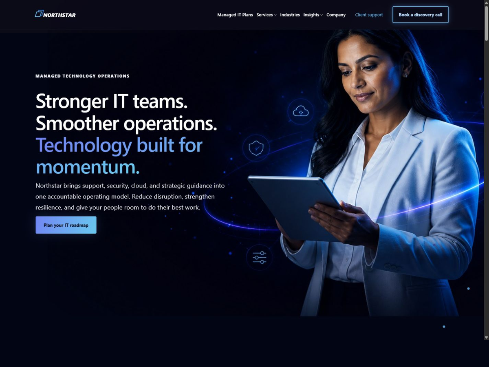

Block theme
packages/msp-nexus — a full-site-editing theme using WordPress-native block APIs and semantic HTML.
MSP Nexus 0.5.4
A full-site-editing block theme, a companion functionality and visual-design plugin, a customization-safe child starter, and an independent licensing and update service — all WordPress-native, all clean-room.
packages/msp-nexus — a full-site-editing theme using WordPress-native block APIs and semantic HTML.
msp-nexus-core — Nexus Studio, content model, conditional layouts, dynamic blocks, onboarding, diagnostics, and the license client.
msp-nexus-child — a customization-safe starting point so client work survives updates.
services/licensing-service — entitlement, activation, signed updates, package delivery, and the customer portal.
Preview

What 0.5.4 includes
Filter the list to check whether a capability is present in this release.
No capability matches that search.
See requirements traceability for requirement-level evidence and the intentional safety boundaries.
Provenance
Reference products were studied only to understand capability categories, packaging conventions, operational safeguards, and commercial expectations. No proprietary source, visual design, copy, trademarks, or update endpoints are reused. The architecture is a WordPress-native replacement, not a source or UI clone.
Pre-1.0
Version 0.5.4 is a pre-1.0 release. Packaged single-site and multisite installs are verified on PHP 7.4.33 through official WordPress Playground blueprints, and the licensing service has persistence-domain and HTTP contract tests — but the version number is telling you something. Pilot before you standardize a client base on it.